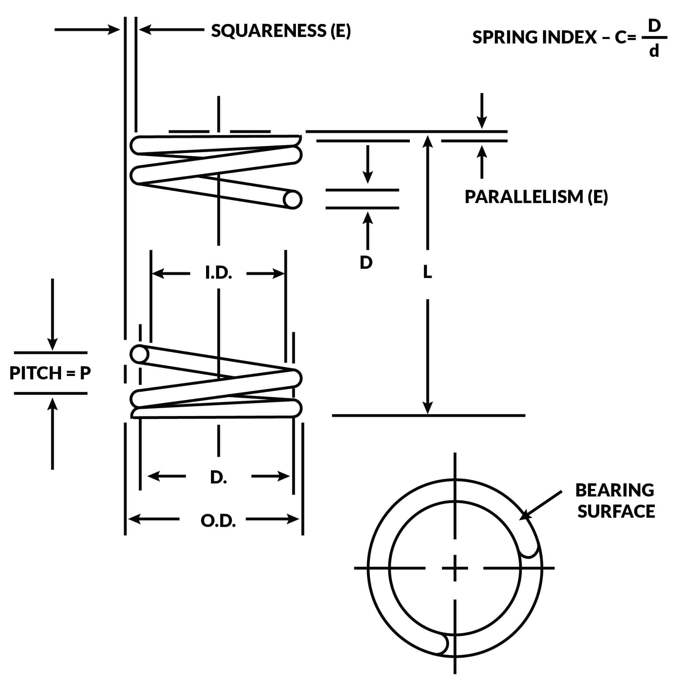
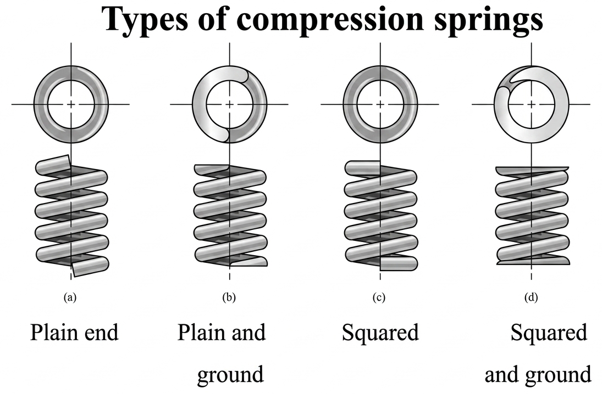
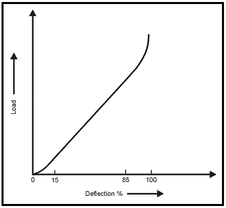
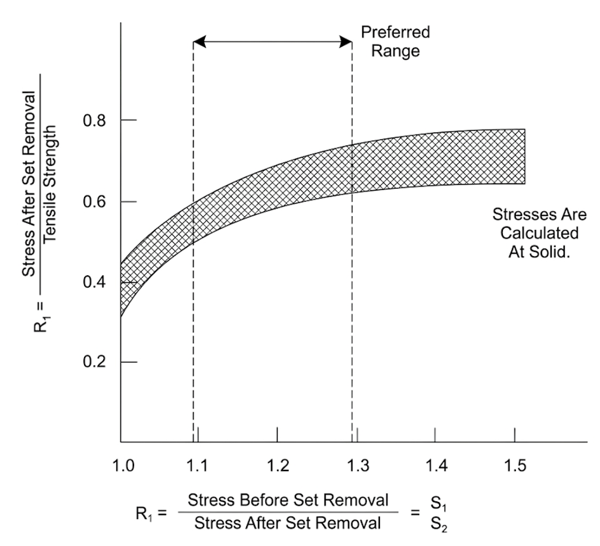
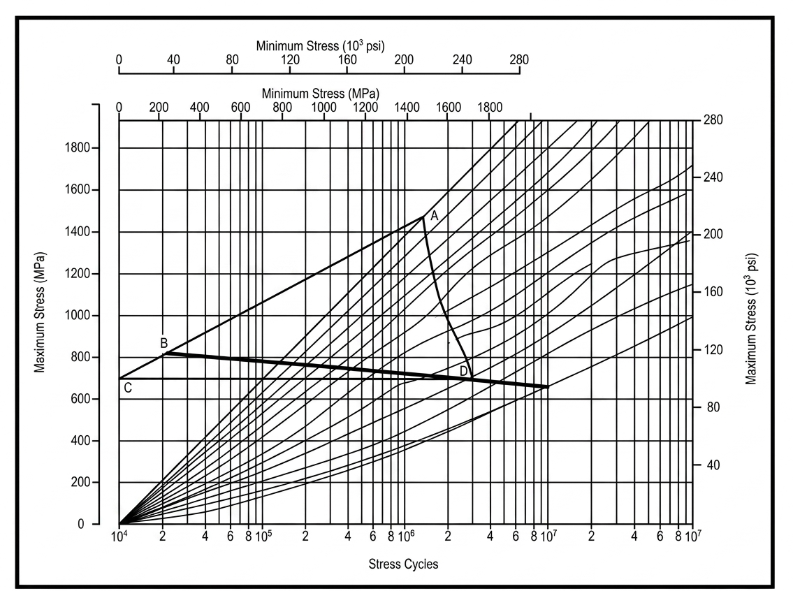
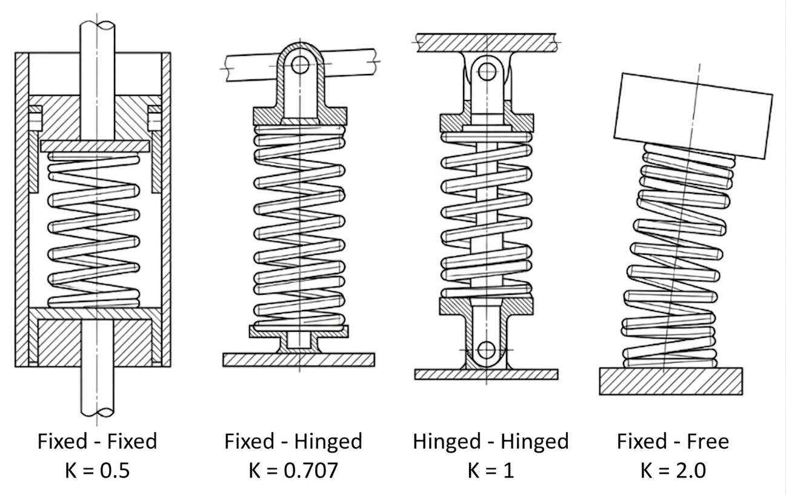
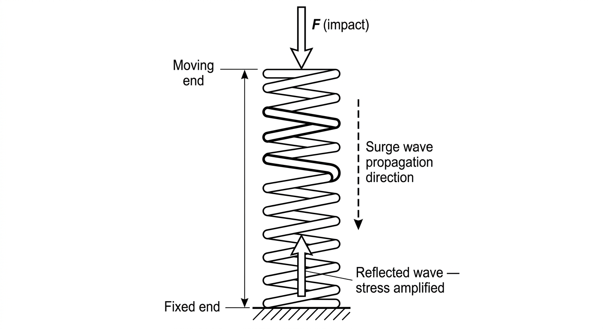
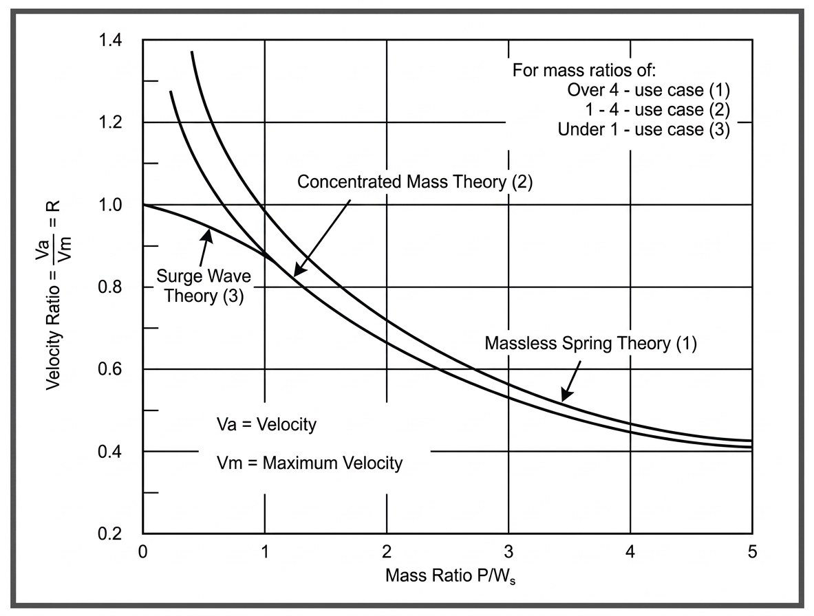
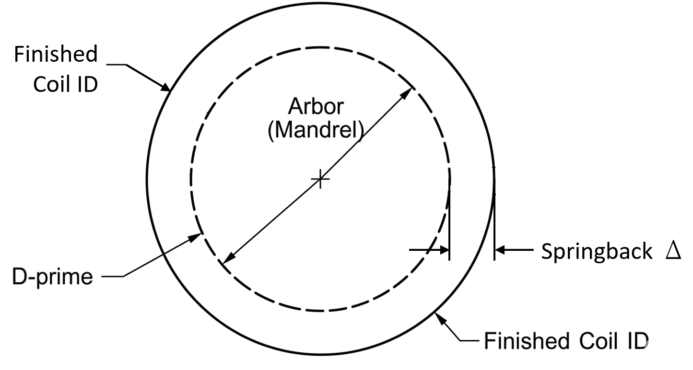

Smart Spring Calculator for Compression Springs with Round Wire
| Parameter | Free | L1 | L2 | At Solid | At Buckle | Units |
|---|---|---|---|---|---|---|
| Load | 0 | lb | ||||
| Load Tol. ± | 0 | lb | ||||
| Length | in | |||||
| Deflection | 0 | in | ||||
| % Max Deflection | 0 | 100 | % | |||
| Corrected Stress | 0 | psi | ||||
| Corrected % MTS | 0 | % | ||||
| Uncorrected Stress | 0 | psi | ||||
| Uncorrected % MTS | 0 | % | ||||
| Expanded Coil OD | in |
What Is a Helical Compression Spring?
A helical compression spring stores energy and resists compressive force. When the ends are pushed toward each other, the spring deflects and pushes back with a restoring force proportional to displacement. This linear force–deflection relationship is what makes spring behavior predictable and calculable.
Of all spring configurations, the straight cylindrical spring wound from round wire is by far the most common, appearing in automotive valve trains, aircraft fuel systems, consumer electronics, and countless other applications. Round wire is preferred because it stores more energy per unit weight than rectangular wire and is substantially cheaper to draw and form.
When applications demand unusual load-deflection behavior — a nonlinear rate, a lower solid height, or resistance to resonance — engineers turn to alternative geometries: conical, barrel-shaped, or hourglass coils, sometimes with variable spacing between turns. Rectangular wire is used specifically when minimum solid height is the priority, which is why die springs are almost always made from it. Springs can also be nested concentrically to multiply energy storage without enlarging the installation envelope.

Compression Spring Dimensional TerminologyGeometry & Terminology
Three diameters describe every coil spring. The outside diameter (OD) is used when the spring operates inside a bore or cavity. The inside diameter (ID) is specified when the spring fits over a rod or shaft. The mean diameter (D) is the average of OD and ID. Mean diameter is what all stress and rate equations use internally.
Coil diameter grows slightly when a spring is compressed. Even small increases matter when clearances are tight. The expanded OD can be estimated from the initial pitch geometry:
Long springs may also buckle sideways under load, requiring additional diametral clearance beyond what this estimate provides.
The free length (Lf) is the overall spring length with no load applied. When loads are not tightly controlled, free length is the primary dimension to specify on drawings. When exact force targets must be met, free length becomes a reference dimension — it floats to satisfy the load — and pitch is the parameter that sets it.
Pitch (p) is the center-to-center distance between adjacent coils. It directly determines free length for a given coil count and end type (see dimensional characteristics table below).
The spring index is the ratio of mean coil diameter to wire diameter:
It is arguably the most important dimensionless parameter in spring design — it governs the stress correction factor, manufacturing difficulty, and handling behavior.
Total coils (Nt) = active coils (Na) + dead coils (Nd). Active coils deflect under load and set the spring rate. Dead coils are the end turns bearing against the seat. The dead coils contribute to solid height but not to rate. End type determines the dead coil count (see table below).
Solid height (Ls) is the spring length when every coil contacts its neighbor. For ground-end springs: Ls = Nt × d. For unground ends: Ls = (Nt + 1) × d. Solid height should be specified as a maximum on engineering drawings, with any plating thickness factored in.
| Parameter | Open / Plain (not ground) | Open / Plain (ground) | Squared only | Squared & Ground |
|---|---|---|---|---|
| Solid Height (Ls) | (Nt + 1)d | Nt · d | (Nt + 1)d | Nt · d * |
| Active Coils (Na) | Nt | Nt − 1 | Nt − 2 | Nt − 2 |
| Pitch (p) | (Lf − d) / Nt | Lf / Nt | (Lf − 3d) / Na | (Lf − 2d) / Na |
| Free Length (Lf) | p · Nt + d | p · Nt | p · Na + 3d | p · Na + 2d |
| Total Coils (Nt) | Na | Na + 1 | Na + 2 | Na + 2 |
* Small-index springs can achieve lower solid heights. Total coil count should be shown as a reference dimension on engineering drawings.

Compression Spring End Type ComparisonEnd Types, Squareness & Coil Direction
Four end configurations are available: plain, plain-ground, squared, and squared-and-ground. End type affects solid height, active coil count, free length calculation, and manufacturing cost.
For a spring to seat squarely and resist buckling, it needs a bearing surface of at least 270°. Squared-and-ground ends reliably provide 270°–330° of contact. Squared ends without grinding are the better choice when wire is very fine (under 0.5 mm / 0.020"), the index exceeds 12, or the spring rate is low — grinding these springs can produce dangerously thin sections at the wire tip.
Squareness measured in the free position does not guarantee squareness under load. For applications where in-service squareness matters, verify it at the installed test height.
Compression springs exhibit very low hysteresis. The small energy loss during cycling comes from friction at the end seats as the coils try to rotate slightly during compression. These losses to not from internal material damping. In most designs internal material damping losses are negligible.
Springs can be wound left-hand or right-hand. For single-spring applications, direction is immaterial — if unspecified, the manufacturer chooses whatever is most efficient for their equipment.
The exception is nested springs. When two springs are concentrically stacked with small diametral clearance, they must be wound in opposite directions. Matching wind directions causes coils to interleave under deflection, locking the assembly.
 Compression Spring Coil Directon
Compression Spring Coil Directon
Spring Rate & Load–Deflection Behavior
Spring rate (k) is the change in load per unit of deflection (lb/in). This is the slope of the load-deflection line. For a round-wire helical compression spring it depends on four parameters: wire diameter, mean coil diameter, active coil count, and the material's shear modulus.
This equation holds when pitch angle is below 15° and deflection per turn is less than D/4 — both conditions satisfied by the vast majority of springs in service. Loads at any position follow directly from rate and deflection:
Springs acting in parallel (compressed by the same displacement) sum their rates directly:
Springs acting in series (each carrying the same load but deflecting independently) produce a composite rate lower than any single element:
The series formula also applies to variable-pitch or variable-diameter springs: divide the body into short increments, compute rate for each, then combine them as springs in series.
A real spring's load-deflection curve is not perfectly linear at the extremes. Coil settling at the beginning of travel and coil clash near solid both distort the curve away from the ideal line. Spring rate and test loads should therefore always be specified at heights within the 15–85% of full deflection range — loads outside this band are inherently harder for manufacturers to hold to tolerance.

Typical load-deflection curve Specify rate and test loads between 15% and 85% of total deflection to avoid non-linear end effectsLoads are classified as static (infrequent cycling, often sustained), cyclic (10,000 to over a billion cycles between defined heights), or dynamic (rapid loading that generates surge waves). Each class has different governing failure modes and allowable stress criteria. See sections below.
Stress & the Wahl Correction Factor
Wire in a compression spring is stressed primarily in torsion. The coil geometry converts axial load into a twisting moment along the wire length. The nominal (uncorrected) torsional stress is:
This treats the wire as a straight torsion member, which is a simplification. Because the wire is curved into a coil, the inner surface of each turn is geometrically shorter than the outer surface, concentrating stress there. A direct shear component from the transverse load adds further stress at that same inner surface, compounding the effect.
The KW1 correction accounts for both coil curvature and direct shear simultaneously. It is the correct factor for any spring that has not been deliberately preset:
Corrected peak stress = KW1 × τ. Because KW1 grows as C decreases, tightly-wound low-index springs carry disproportionately high inner-surface stresses for a given applied load.
After presetting, local yielding at the inner surface redistributes stress more uniformly around the wire cross section. In this condition, only the direct shear component requires correction:
Since KW2 < KW1, preset springs can sustain higher allowable stresses at the same wire geometry. At elevated temperatures with very slow loading, the stress distribution approaches fully uniform — no correction factor — but this case is uncommon and warrants careful review.
.png) Wahl correction factor
KW1 and KW2 plotted against spring index C.
Wahl correction factor
KW1 and KW2 plotted against spring index C.Both factors increase steeply below C = 4
Static Loading — Allowable Stresses & Presetting
When a spring cycles infrequently or holds a sustained load for long periods, the governing failure modes are permanent set (plastic deformation that shifts free length) and stress relaxation (gradual load loss under sustained compression, especially at elevated temperature). Fatigue is not the primary concern in this loading class.
If the KW1-corrected torsional stress at solid exceeds the material's allowable percentage of tensile strength, the spring will take a permanent set the first time it is compressed to solid. Whether that is acceptable depends on whether solid is a credible operating condition.
Presetting compresses a spring to solid to deliberately yield the highest-stressed inner surface. The plastic flow leaves behind compressive residual stress that directly opposes the operating torsional stress. This effectively pre-loads the wire in the beneficial direction. The result is a spring that carries significantly higher loads without setting in service.
Cold set removal should reduce free length by at least 10%. Under 10% makes free length control difficult. A stress ratio above 1.3 (calculated / allowable) produces geometric distortion without meaningfully increasing load capacity. With a stress ratio above 1.3 the gains plateau.

Load-Carrying Capacity vs. Percentage of Set Removed Capacity plateaus above a stress ratio of about 1.3| Material | Before Preset (use KW1) |
After Preset (use KW2) |
|---|---|---|
| Patented & cold drawn carbon steel | 45% MTS | 60–70% MTS |
| Hardened & tempered carbon / low-alloy steel | 50% MTS | 65–75% MTS |
| Austenitic stainless steels | 35% MTS | 55–65% MTS |
| Nonferrous alloys | 35% MTS | 55–65% MTS |
MTS = minimum tensile strength. Bending and buckling stresses are not included in these limits.
When a spring is held at a fixed compressed height for an extended period, especially at elevated temperature, the wire stress decreases gradually as the material creeps at a microscopic level. The practical result is measurable load loss over time. Relaxation is quantified as a percentage of initial load:
Even music wire, which has excellent room-temperature properties, can exhibit meaningful relaxation after 100 hours at temperatures as low as 100°C. Springs for sustained high-temperature service should be heat-set: preset at the service temperature rather than at room temperature. Heat setting substantially improves relaxation resistance and is often more cost-effective than specifying an exotic high-temperature alloy.
 Spring Relaxation Data for Various Metals
Springs were preset at room temperature and tested for 100 hours at the indicated temperatures. The initial stress Kw1 corrected.
Spring Relaxation Data for Various Metals
Springs were preset at room temperature and tested for 100 hours at the indicated temperatures. The initial stress Kw1 corrected.
Cyclic Loading — Fatigue & Life Estimation
When a spring cycles repeatedly between two load heights (from 10,000 to over a billion times) the failure mode shifts from yielding to fatigue crack initiation. The KW1-corrected maximum stress must stay below the material's fatigue allowable for the target life.
Fatigue cracks almost always start at the wire surface, making surface quality the dominant manufacturing variable. Pits, seams, laps, or drawing marks act as stress concentrations that can cut fatigue life by an order of magnitude compared to clean wire. Premium-grade wire specifies tighter surface quality tolerances and is justified for cyclic applications even at added cost.
Shot peening bombards the spring surface with small steel spheres, plastically deforming a thin surface layer and inducing compressive residual stresses exactly where fatigue cracks originate. The mechanism is the same as presetting — beneficial residual stress — but confined to the surface. Peening can increase fatigue strength by up to 20% at 10 million cycles and reduces sensitivity to pre-existing surface defects, though it does not eliminate them entirely.
| Life Target | A228 / SS / Nonferrous unpeened | A228 / SS / Nonferrous peened | A230 / A232 unpeened | A230 / A232 peened |
|---|---|---|---|---|
| 105 cycles | 36% MTS | 42% MTS | 42% MTS | 49% MTS |
| 106 cycles | 33% MTS | 39% MTS | 40% MTS | 47% MTS |
| 107 cycles | 30% MTS | 36% MTS | 38% MTS | 46% MTS |
Assumes ambient environment, no surging, minimum stress = 0. Use as design guidelines only — actual life depends on material heat, wire surface condition, and environment.
To estimate life at stress ratios other than zero, plot the operating stress range on a modified Goodman diagram. Draw a line from point A (at 67% of tensile strength on the 45° line) through the operating stress coordinate (point B). Where this line crosses the vertical axis (point C), draw a horizontal line to intersect the S-N family. The intersection at point D is the estimated life. This method correctly accounts for mean stress contribution to fatigue damage.

Modified Goodman Diagram Fatigue life estimation procedure at non-zero stress ratios, showing construction lines A–B–C–D.Buckling
A helical compression spring buckles (bows sideways) when the combination of its slenderness and the fraction of free length it is compressed exceed a material- and end-condition-dependent threshold. The exact criterion (Wahl 1963, Stahl 1974) expresses the critical deflection ratio as:
where the effective slenderness λ = α Lf / D, and the material constants are:
A spring is unconditionally stable at any load when λ < √C₂ — equivalently, when its slenderness ratio falls below the onset threshold:
α is the effective-length factor analogous to the Euler column end-fixity coefficient. For steel (√C₂ ≈ 2.62):
| End condition | α | Onset Lf/D |
|---|---|---|
| Fixed–Fixed — both ends flat on parallel plates | 0.5 | 5.24 |
| Fixed–Hinged — one flat end, one pivoted | 0.707 | 3.71 |
| Hinged–Hinged — both ends free to pivot | 1.0 | 2.62 |
| Fixed–Free — one fixed, one free to tilt laterally | 2.0 | 1.31 |
When a slender spring is unavoidable, nest multiple shorter springs in series inside a tube or over a rod with intermediate guides between segments.

Spring Buckling End ConditionsEach curve shows the maximum deflection ratio δ/Lf a spring can sustain without buckling for a given slenderness Lf/D. A spring's operating point (its Lf/D and the fraction of free length it is compressed) must fall below and to the left of its end-condition curve to remain stable.
Steel (E=30 Mpsi, G=11.5 Mpsi): C₁=0.812, C₂=6.87. Region below-left of each curve is stable; above-right buckles.
Dynamic Loading — Impact & Resonance
When a spring is loaded or released rapidly, a surge wave — a pulse of torsional stress — propagates from the point of loading toward the fixed end. It travels at roughly 1/10 the speed of a free torsional wave through the wire material. The torsional wave speed in the wire is:
The surge wave velocity in actual springs typically falls between 50 and 500 m/s. For steel, the relationship between axial impact velocity and instantaneous stress reduces to a concise form that is independent of spring geometry:
At high loading velocities, instantaneous surge-wave stress can exceed the static torsional stress calculated from the load equation. When the wave reflects off the far end, stresses are amplified further. Springs in high-speed or impact service must be evaluated against these dynamic stress levels, not solely the static prediction.

Compression Spring Wave SurgeWhen spring mass is less than 1/4 of the mass being accelerated, the spring can be treated as massless in energy-balance calculations. When spring mass is significant, substitute (W + Ws/3) for W in velocity equations — this approximates spring inertia by concentrating its mass at the moving end.
Resonance occurs when the cyclic loading frequency matches the spring's natural frequency or an integer multiple of it. Individual coil deflections and stresses can then far exceed static predictions, and the minimum-load condition may produce zero or tensile contact force as the spring bounces off its seat.
Natural frequency for a compression spring with both ends fixed:
For horizontal spring-ejection with the spring treated as massless:
For vertical ejection, the gravitational potential energy term modifies the result. Both expressions apply only when spring mass is below 1/4 of the ejected mass — use the (W + Ws/3) correction otherwise.

Velocity of an object propelled by a compression spring Velocity of a mass propelled by a compression spring as a function of initial stress and weight ratioMiscellaneous Calculations
When a helical spring is wound cold on a mandrel, the wire springs back elastically as soon as winding tension is released. The coil opens slightly, so the finished inside diameter is always larger than the arbor it was wound on. To hit a target inside diameter, the arbor must be made deliberately undersized to compensate for this springback.
The required arbor diameter D' is found from the Gardiner-Carlson formula, which models the wire as an elastic beam bent around a cylinder and accounts for the ratio of bending stress to stiffness:
where D is the desired mean coil diameter after springback, d is the wire diameter, σB is the minimum tensile strength of the wire, and E is Young's modulus. The constant 1.7 is an empirical winding factor established by Gardiner and Carlson from physical winding trials.
Young's modulus is not independently tabulated for every spring material. Instead it is derived from the shear modulus G and Poisson's ratio ν, both of which are standard material database fields, using the isotropic elasticity identity:
This relationship holds exactly for any homogeneous isotropic material. For common spring materials the resulting E values are: ~30 Mpsi for carbon and alloy steels, ~28–29 Mpsi for stainless steels, and ~15–19 Mpsi for copper and titanium alloys.
The derivation starts from the elastic beam-bending curvature equation. When a wire of diameter d is bent to a radius r, the bending stress at the outer fibre is σ = E·d / (2r). Setting the curvature of the arbor (1/r') and the curvature of the finished coil (1/r) equal to the elastic springback curvature yields a quadratic in D'. The Gardiner-Carlson solution to that quadratic is the formula above. For this formula, only the positive root is the physically meaningful one.
The formula can be rearranged to make the structure clearer by defining a single curvature factor:
which gives the compact form:
κ has units of 1/length and represents how much curvature the material can elastically sustain per unit of wire diameter. A stiffer material (higher E) or a thicker wire (larger d) both reduce κ, meaning less springback and a larger required arbor relative to the finished ID.
Gardiner, F. J. and Carlson, H. C. R., The Spring-back of Coil Springs, Mechanical Engineering, vol. 80, pp. 74–76, 1958. Formula implementation follows the Associated Spring Designers (ASD) software convention.

Compression Spring Winding on Arbor Arbor (inner circle, dashed) vs. finished coil ID (outer circle). The difference is the elastic springback the formula predicts